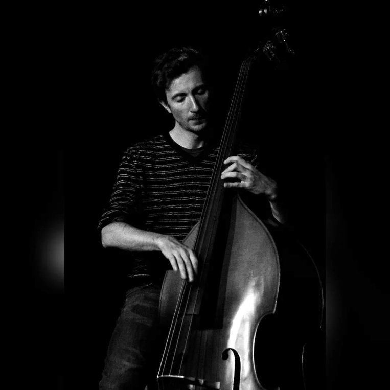

About
Sean is an in-demand upright and electric bass player currently based in Montreal.
He has been playing relentlessly since his early teens, going on to study with such teachers as Buster Williams, Jay Anderson, and Quincy Davis during his undergraduate studies at University of Manitoba and Master's studies at Manhattan School of Music.
A versatile bassist, he is also known for his melodicism, groove and dedication to serving the music. This has led to countless performance and recording opportunities with awarding winning artists throughout Canada, the USA, and a tour in Colombia. He is also a prolific composer and an enthusiastic educator.
He is currently developing is own trio project, and co-leading an instrumental project with guitarist David Lemyre. He is also a band member of Salome Perli, Sun Fantasia, Kuluse Souriante, Santiago Ferrer Tio and Jomale.
